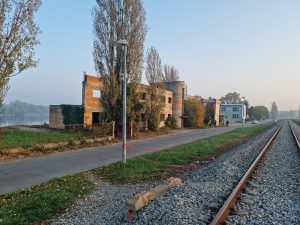
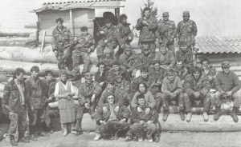
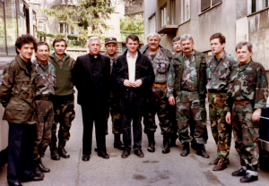

Redovni vojni rok služio sam u Karlovcu u Pješadijskoj školi rezervnih oficira, PŠRO, od 27. 8. 1988. do 31. 3. 1989. kada kao vodnik stažist dolazim u Delnice gdje ostajem do kraja vojnog roka 17. 7. 1989. Ne znam tko me je i zašto izabrao u PŠRO. Nisam imao pojma što znači ta skraćenica, a poslije sam saznao da smo mi 53. klasa bilečanske škole i da smo u Karlovcu svi iz Hrvatske što je značilo početak stvaranja Hrvatske vojske. Nismo doživjeli uobičajeno vojničko maltretiranje. Bilo nas je 150, a ja sam nagrađen satom kao treći u Klasi. Za vrijeme šest mjeseci provedenih u Karlovcu boravio sam devet puta kod kuće. U Delnicama sam bio komandir samostalnog minobacačkog voda brigade. Do rata ’91. svake sam godine proveo više od deset dana na kojekakvim vježbama napredujući od komandira čete do zamjenika komandanta bataljuna, a po činovima od potporučnika do kapetana.
Moja aktivnost u Domovinskom ratu počinje nakon pogibije redarstvenika u Borovu Selu, točno u nedjelju 4. 5. 1991. Te večeri imenovan sam koordinatorom što je značilo organizirati straže u Mikanovcima. Još istu večer oformili smo pet četa s trideset do četrdeset ljudi. Punktovi su bili u Kolodvorskoj, Đakovačkoj, Osječkoj, Vinkovačkoj i Potočkoj te dvije grupe specijalaca za eventualne opasne situacije. Još je postojalo odjeljenje veze i inženjerijsko koje je izrađivalo priručna sredstva za prisilno zaustavljanje auta.
15. svibnja predvečer zove me komandant Teritorijalne obrane potpukovnik Ivan Petrinović u Štab i kaže da sam komandant 1. bataljuna nekadašnje Bosutske brigade, a tada 10. R brigade ZNG pri Policijskoj upravi (PU) Vinkovci. Zamjenik mi je Vlado Božičević. Do jutra trebamo od nekoliko kutija kartica vojnih obveznika složiti 3 čete, 3 samostalna voda i 3 samostalna odjeljenja, ukupno 480 vojnika s mjestom stanovanja Stari i Novi Mikanovci, Vođinci, Ivankovo, Jarmina, Retkovci, Prkovci, Rokovci i Andrijaševci. Mobilizacija ujutro, kamioni s oružjem su u Slavonskom Brodu.
U četiri sata kad smo bili pri kraju došao je Petrinović i kazao da se mobilizacija odgađa, ali da trebamo završiti posao sutra. U narednim danima naše spiskove su korigirali u mjesnim zajednicama te je skupljanje u Ivankovu, Starim Mikanovcima i Andrijaševcima za 1., 2. i 3. četu bilo 28. 5. Taj se datum slavi kao Dan osnutka brigade.
U to vrijeme u Splitu i Sisku uhapšeni su pojedini građani od strane specijalnih postrojbi JNA. Sredinom svibnja počinju i kod nas telefonske prijetnje. U gluho doba noći zvoni naš telefon i javlja se moja žena. Muški glas joj je opsovao i zaprijetio klanjem djece. Za par dana prijetnja je ponovljena uz dodatak da će meni minirati školu. Mene, moju obitelj i našu kuću čuvale su tada straže u vrtu i na ulici ispred kuće, a moji su sinovi sa svojim prijateljima iz susjedstva organizirali obranu od mogućih zarobljivača. Očaralo me koliko se cijelo selo brinulo za sve nas.
6. lipnja Petrinović odlazi na novu dužnost u 3. A brigadu, a na njegovo mjesto dolazi major Josip Matić. Naša 10. R brigada preimenovana je 20. lipnja u 109. R brigadu HV koja je mobilizirana 28. 6. i to samo naš, odnosno moj, 1. bataljun. Ostali, dakle 2. bataljun kojeg čine mještani istočnog dijela Općine Vinkovci, 3. bataljun sastavljen od stanovnika Općine Županja i 4. od Općine Vukovar nisu se odazvali pozivu. Ostali su na nivou mjesnih zajednica pod zapovjedništvima predsjednika Općina. Slično je mobilizirana u isto vrijeme brodska 108. brigada.
U srpnju, kolovozu i dobrom dijelu rujna jedino 1. bataljun 109. brigade djeluje kao organizirana postrojba. Osim što drži položaje na liniji Durgutovica-voćnjak Borinci-Jarmina dužine 10 km koja se nalazi 2.5 km sjeverno od Ivankova, bataljun pomaže obrani Đeletovaca, Lipovca, Otoka, Tordinaca i Vinkovaca na Inlesu, Žankovcu, Maloj Bosni i Zalužju te brani Vukovar u Borovu Naselju na liniji Dom tehnike-Internat od Arkanovaca u Borovu Selu.

Prilikom prvog postrojavanja bataljuna 28. svibnja svakom je vojniku priopćeno kojoj jedinici pripada, koja mu je dužnost i tko mu je zapovjednik. Kako je postajalo sve očiglednije da je rat neizbježan tako su se najvećom brzinom radile pripreme za mobilizaciju. Popisani su svi privatni i društveni strojevi (traktori, bageri, motorne pile,…) na području spomenutih mjesnih zajednica kako bi se u slučaju potrebe najbrže nabavilo što treba. Razrađen je sistem okupljanja vojnika i starješina preko mobilizacijskih poziva, ali i rezervni pomoću usmenih poruka. Znalo se tko koga obavještava i gdje se tko skuplja. Ubrzo je obavljena obuka zapovjednika, a zatim i većine vojnika iz prve pomoći, rastavljanja, sastavljanja i rukovanja streljačkim naoružanjem i priručnim sredstvima i obuka o straži. S 2. četom izvršeno je gađanje na mikanovačkom pašnjaku i marš dužine 15 km s taktičkim radnjama: četa na maršu, nailazak na zasjedu, prelazak pruge i ceste te upoznavanje terena. Nakon završene vježbe svi su preumorni budući gardisti polijegali na travu na nogometnom igralištu. Jedan mi je budući branitelj predbacio: «Ti nam ne daš ispaliti više od pet metaka i ganjaš nas kao kerove, a u Jarmini su u nedjelju ispred crkve ispucali toliko da je bila veškorpa čahura.»
Prilikom ovih aktivnosti ljudi su se međusobno upoznali. U razgovorima je bio prisutan strah od borbe bez puške i ostalog naoružanja i opreme te averzija na staru uniformu. «Neću nositi šajkaču.» – bila je najvažnija primjedba budućih hrvatskih vojnika.
Slične su vježbe trebale imati i ostale čete, ali nisu, jer je bila mobilizacija 28. 6.
U srpnju su vojnici čuvali žito i ulaze u sela te držali položaje prema Mirkovcim. Prilikom prvog napada na Mirkovce bili su rezerva. Tada su boravili dva dana u Vrtnom naselju gdje ih je raketirao avion. Nisu uključeni u borbu.
Tijekom spomenutog bile su još izraženije aktivnosti KOS-e tako da se strahovalo od uhićenja (naročito zapovjednika) i od diverzija na značajne objekte. Određene mjere predostrožnosti koje su se tada provodile (straže, patrole,…) vjerojatno su spriječile ta neprijateljska djelovanja i dale prva borbena iskustva.
Mobilizacija je počela 28. lipnja 1991. u 10 sati i bez obzira na uobičajene i očekivane poteškoće, uspješno je provedena. Postrojbe su se smjestile po selima u pogodnim objektima. Prvih dana bilo je karakteristično miješanje civilnih vlasti te su dolazile zapovijedi s potpisima općinskih čelnika, a i neki saborski zastupnici su išli po selima dijeliti burad s benzinom i objašnjavati pravljenje benzinskih koktela. Ponegdje se ignoriralo vojno zapovjedništvo bataljuna što je stvaralo poteškoće i nepovjerenje. Gotovo svi postavljeni zapovjednici četa tada su činili ogromne napore da bi uvjerili ljude u nužnost vojničkog ustrojstva, jer su poneki, ne svi, tadašnji seoski funkcionari imali svoje pogrešne ideje o organizaciji i vođenju rata. Smatrali su da svaka mjesna zajednica treba imati svoju obranu u kojoj će oni biti glavni. Rovarili su protiv bataljunskog rukovodstva s namjerom da ga smjene. To bi sigurno rezultiralo kasnijim padom nekih sela iz zone odgovornosti bataljuna i pogibijom stotina vojnika i civila. Povijesnu ulogu na našem području u sprečavanju spomenutih negativnosti i eliminiranju fenomena dvostrukog zapovijedanja odigrao je Ivan Krstanović i najviše zahvaljujući njemu krenulo se organizaciji vojničkog ustrojstva. Nositelji ideje seoskih vojski su marginalizirani i njihovo djelovanje u konačnici nije ostavilo značajnijeg traga.
Bataljun je nakon mobilizacije imao 480 vojnika raspoređenih u tri čete. Prvu su činili Ivankovčani i Jarminčani. Komandir je prvih nekoliko dana bio Pero Meštrović, a zatim ga je zamijenio Ilija Miličević. Drugu četu činili su mještani Starih i Novih Mikanovaca i Vođinaca sa zapovjednikom Ivicom Puškarićem do rujna te Dragom Levanićem poslije. Treća četa bila je sastavljena od stanovnika Rokovaca, Andrijaševaca, Retkovaca i Prkovaca. Prvi joj je komandir bio kratko Ilija Miličević, a zatim Josip Stepić. Vojnici odjeljenja veze, izviđačkog odjeljenja, odjeljenja strela S – 2M, pratećeg, pozadinskog i inženjerijskog voda bili su u prvo vrijeme razvrstani u spomenute čete.
Prvi zadatci postavljeni bataljunu bili su zaštita sela od ubačenih diverzanata, priprema za protuoklopnu borbu i vojna obuka. Na području odgovornosti bataljuna bilo je predviđeno 31 mjesto za napad na neprijateljska oklopna vozila. Položaji su bili dobro odabrani i pripremljeni fortifikacijski i taktički. Osim protutenkovskih mina za zaprečavanje su bile predviđene klade drva, traktorske prikolice, benzin i olupine automobila u koje bi se stavljale plinske boce i eksploziv.
JNA se u srpnju i kolovozu vozala tenkovima kroz sela i provocirala, a mi smo imali naredbe da ih propuštamo. Spomenut ću tri karakteristična primjera: 5. kolovoza u 16,40 tenkovska kolona, 6 tenkova i 4 oklopna vozila, došla je u Jarminu iz pravca Gaboša, prošla kroz selo i okrenula kod hladnjače. Vratili su se u selo i usput uništili složeni crijep za kuću pokraj ceste i pregazili nekoliko hidranata. Otišli su prema Ostrovu. Drugom prilikom su nastavili prema Ivankovu do Budrovaca gdje su okretali tenkove u vrtovima i gazili posađeno povrće. Na Svetu Klaru 11. kolovoza kroz St. Mikanovce gdje je bio kirbaj, prolazila je prema Đakovu kolona od 6 tenkova i 4 borbena vozila. Imali smo tada jedan ambrus i nosali ga kroz selo kako bi njihovi obavještajci pomislili da ih imamo više. Incidenti su na sreću izbjegnuti taj puta, a i u narednim sličnim situacijama. Bilo je teško uvjeriti ljude da ne nasjednu na provokacije i zapucaju i veliki je uspjeh zapovjednika što nije došlo do neželjenih situacija, jer bi tada sigurno svaki sukob završio tragično i za nas nepovoljno što je JNA željela.
Jedan od zadataka koji je izvršio bataljun u suradnji s lovcima, vatrogascima i mještanima bila je zaštita žetve na području zapadnog dijela vinkovačke općine. Nije izbio ni jedan požar. Uhvaćen je jedan četnik (tako se deklarirao) iz Loznice na željezničkom kolodvoru Vođinci.
Drugi važan posao bio je prihvat, zbrinjavanje i čuvanje vojnika koji su pobjegli iz JNA. Svi su sigurno otpremljeni svojim kućama ili na neko drugo mjesto i nijedan nije pao u neprijateljske ruke. Jedno prihvatilište spomenutih vojnika bio je lovački dom u St. Mikanovcima. Sredinom kolovoza dobili smo informaciju da je JNA saznala za tajno mjesto i da se sprema napasti ga. Trebalo je hitno vojnike premjestiti na drugu lokaciju. Akcijom je rukovodio Ivan Krstanović. Vojnici su utovareni u mraku u jedan od tri auta koji su krenuli iz Potočke ulice jedan za drugim. Prvi prazni je skrenuo prema Vinkovcima, drugi također prazni prema Đakovu, a treći s vojnicima otišao je na željeznički kolodvor gdje je čekao četvrti u koji su vojnici prešli i koji ih je odvezao na novo odredište u Rokovcima.
Koncem kolovoza zarobljena su dva vojna vlaka u Mikanovcima i jedan u Ivankovu koji su prevozili naoružanje i opremu iz Slovenije u Srbiju. Vlak u Ivankovu zaustavili su i razoružali 21. 8. pripadnici Samostalne čete iz Vinkovaca. Tada je došla obavijest da kroz Ivankovo trebaju proći dvije kolone tenkova, jedna iz Đakova, druga iz Vinkovaca. Zbog toga je zapovjednik Ivankovačke čete Ilija Miličević odredio grupe vojnika za zaprečavanje sporednih ulica prema kolodvoru. Istovremeno je postavio protuoklopne grupe na ulazima u selo.
U pratnji vlaka bio je jedan kapetan, jedan poručnik i 14 vojnika. Svi su privedeni u čekaonicu željezničkog kolodvora gdje su popisani. Ilija kaže da se s njima postupalo gostoljubivo tako da im je civilno stanovništvo donijelo kavu, sok, pivo i šunku. Ništa nisu konzumirali. Izjavili su da se hoće vratiti u Strizivojnu odakle bi otišli u Bosnu. To im je omogućeno bez ikakvih provokacija.
Razoružanje pratnje prvog vlaka u Mikanovcima dva dana kasnije u kojoj je bio kapetan Đorđević, 2 podoficira i valjda 28 vojnika izvršili su pripadnici mikanovačkog voda na čelu s Ivom Kostićem. Opkolili su vlak i Antun Ljubas je ušao unutra s uperenom puškom tražeći da se predaju. Nasuprot njemu stao je zastavnik Milutinović također s prstom na obaraču. Minuta neizvjesnosti bila je duga kao vječnost. Zastavnik je naposljetku odložio pušku, dignuo ruke i pošao iz vlaka. Za njim su izašli i ostali.
Prema naređenju komandanta brigade operacijom istovara oružja koja je uslijedila nakon sat vremena rukovodio je komandir samostalne čete iz Vinkovaca sa svojom ekipom. Tada je došao drugi vlak i u njega je prvi ušao Mirko Blažević. Razoružali su potpukovnika Nikolovskog i vojnike, a vlak je nastavio prema Vinkovcima. Tijekom istovara prvi vlak su nadlijetali avioni, a bilo je nepovjerenja između domaćih i stranih te je morala intervenirati vojna policija iz Osijeka. Bez obzira što se dogodilo više krađa oružja, što su mještani odnijeli dio intendantske opreme i što je bilo previše mučnih scena, ova komplicirana akcija ipak je uspješno izvedena i od tada su jedinice na našem terenu bile solidno opremljene oružjem i ostalom opremom. To je bila prekretnica u ratu. Bataljun je dobio puške, PM-e, MB-e, RB-e i ja sam bio siguran da ćemo pobijediti, ali da moramo proći sva zla rata i ljudske pokvarenosti i da su demokracija, pravda i sreća daleko. Odluku o zarobljavanju vlaka donio sam bez naređenja odozgo. Dan uoči njegovog dolaska bio sam upoznat od željezničara da stiže. Nisam saznao ništa o pratnji i osiguranju. U zapovjedništvu brigade tražio sam te večeri instrukcije i naređenja za postupke bataljuna. Dobio sam od komandanta Matića odgovor: «Uradi po svome. Ja ti nisam ništa rekao.»
Odlučio sam da se vlak zarobi i uzme sve što su vozili. Smislio sam i isplanirao operaciju istovara, prevoženja i skladištenja i osiguranja cijele akcije od dolaska tenkova JNA-e iz pravca Đakova ili Vinkovaca i najezde civila. Rano ujutro su me obavijestili da vlak dolazi. Izdao sam potrebna naređenja u komandi bataljuna u Vođincima i pošao na kolodvor u Mikanovcima. Ivo Kostić je upravo izvršio opisano zarobljavanje također samoinicijativno. Postavili smo straže na prilazima kolodvoru kako bi spriječili dolazak civila. Tada smo dobili naredbu da smo podčinjeni Samostalnoj četi. Ta je odluka izazvala probleme.
Smatram i danas da smo ispravno odlučili Ivo Kostić i ja. S vojničkog aspekta bilo bi jako loše da je naoružanje iz vlakova otišlo u ruke neprijatelju, a s moralnog nepravedno, jer su građani Hrvatske velikim dijelom participirali u financiranju narodne obrane i zaštite i zaslužuju oružje za svoju obranu. Bilo me je sram zbog neprimjerenog ponašanja nekih mojih sunarodnjaka, sumještana pa i vojnika, ali sam jako ponosan zbog postupaka prema zarobljenicima. Dao sam precizne upute za taj po mom mišljenju jako značajan dio posla. Zadatak su besprijekorno obavili pripadnici poduzeća Glavnik PIK-a Vinkovci. Zarobljeni oficiri i vojnici JNA-e su iz čekaonice željezničkog kolodvora PIK-ovim autobusom odvezeni u prostorije za prehranu gdje su dobili jelo, piće, kavu i lubenice. Postupci prema njima bili su izrazito korektni i humani tako da su se prilikom rastanka ispijale zdravice. Tijekom prisilnog druženja zarobljenici su otvorili dušu i ispričali svoja stradanja i razočarenja. Oficiri su u Sloveniji ostavili svoje najmilije, žene i djecu, lagodan život i luksuzne stanove. Protiv svoje volje pošli su u neizvjesnost. Većina ih je cijeli život vjerovala u plemenite parole bratstva-jedinstva naroda i narodnosti i prakticirala ih, jer su kao Srbi oženili Slovenke i živjeli daleko od rodnog kraja. Ja sam ih iskreno žalio. Spoznao sam slabost i trulost JNA i neistinitost tvrdnje i onda i danas da je to treća ili četvrta vojna sila u Evropi. Bilo mi je jasno da će brzo pokleknuti i lako se raspasti, ako im se iole suprotstavimo i nije me bilo strah. Više sam se bojao negativnosti u vlastitim redovima.
Zarobljenici su tada dobili civilna odijela, plaćene su im putničke karte i odvezeni su u Strizivojnu odakle su po vlastitoj želji vlakom otišli u Bosnu. Nijedan nije doživio ni najmanje maltretiranje ili ponižavanje i rezultat toga je da na Mikanovce tijekom cijelog rata nije pala granata. Bombe namijenjene mikanovačkoj školi, u to vrijeme bolnici, i željezničkom kolodvoru bačene su duboko u šumu gdje nije bilo ni žive duše.
Zarobljena oprema, naoružanje, municija i eksplozivna sredstva smješteni su najvećim dijelom u pogodnim skladištima radnih organizacija (PIK, Šumarija).
Tih dana bila je vrlo aktivna neprijateljska avijacija na pruzi Zagreb – Beograd i na Vinkovce. Jednom prilikom dok je moj zamjenik Vlado Božičević obilazio pozadinski vod u Vođincima gdje je u skladištima kooperacije bilo mnogo eksploziva iznenada se pojavio avion toliko nisko da se na licu pilota jasno vidjela maska. Dvorište je bilo puno vojnika u uniformama koji nisu stigli zaleći, već su samo usmjerili pogled na pilota. Avion je nestao jednako brzo kao što se i pojavio. Za par sekundi čula se strahovita detonacija iz pravca Utvaja. Da je smrtonosni tovar istresao na vojnike i skladišta razorio bi pol sela i ubio mnogo ljudi. Zagonetka koje je nacionalnosti bio pilot ostat će vjerojatno nerazjašnjena, ali je sigurno da je bio čovjek. Neki drugi piloti nisu imali u sebi čovječnosti. U nekoliko navrata nemilosrdno su mitraljirali i raketirali civile u Ivankovu koji su ih znatiželjno gledali i slušali eksplozije iz Vinkovaca što je rezultiralo ranjavanjem nekoliko civila i pogibijom jedne žene.
Zadnjih dana kolovoza i tijekom rujna opremljeni su i stavljeni u funkciju: prateći, inženjerijski i pozadinski vod te odjeljenje veze i izviđačko odjeljenje. Nešto kasnije isto je učinjeno s mješovitim vodom i odjeljenjem za stražu, a uz tri postojeće čete formirana je i četvrta tako da su najdramatičniji događaji dočekani najspremnije.
Nakon uvodne faze rata koju smo maksimalno iskoristili za organizacijske poslove, obuku i opremanje, početkom rujna počinje druga faza. Struktura bataljuna stvorena u ljeto i jesen 1991. zadržala se najvažniji dio rata, sve do proljeća 1992. U bataljunu je bilo ukupno 1100 vojnika i starješina, a najveće brojno stanje iznosilo je 850 u studenom. Prilikom svečane prisege 27. prosinca bilo je točno 759 pripadnika 1. bataljuna. Pod navedenim brojnim stanjem ljudstva u pojedinim jedinicama misli se na vojnike i zapovjednike koji su boravili i djelovali značajno vrijeme u tim postrojbama. Bataljun je po brojnosti i po borbenoj moći bio dvostruko jači od predviđenog formacijskog ustroja. Pojedini vodovi imali su i do sto ljudi što je brojno stanje čete. Slično je i s brojem vojnika u odjeljenjima.
Glavni zadatak bataljuna bila je obrana borbene linije: šuma Durgutovica, voćnjak Borinci i selo Jarmina. Bez posebnih zapovijedi komandanta brigade bataljun je sredinom rujna zauzeo položaje u Durgutovici i voćnjaku Borinci. Ocijenili smo u komandi bataljuna da su oni strateški važni za obranu Vinkovačke grede, Vinkovaca i zapadnog dijela vinkovačke općine. Za donošenje ovakve odluke bilo je presudno izviđanje početkom srpnja koje sam izvršio osobno s predsjednikom MZ-e Ivankovo Pavom Medvedom, stručnjacima za vezu Mladenom Herbeom i Markom Džaltom i s dva policajca. Istražili smo područje Šumarske kuće do ruba šume prema Karadžićevu, a naročito podzemna skloništa bivše JNA i utvrdili da je šuma prazna. Sumnjalo se da ju drži neprijatelj. Od tada su pripadnici 1. ivankovačke čete vršili svakodnevna patroliranja spomenutog područja. Od sredine rujna Durgutovica je čuvana danonoćno. Utvrđivanje prvih položaja i kopanje prvih rovova organizirao je tadašnji zamjenik 1. čete Ivica Puškarić, a u listopadu je uz kišu koja je danima lila kao iz kabla šumu držao Mirko Prpić s novomobiliziranim pripadnicima 1. čete. Rukovođenje izradom skloništa vršio je kasnije uglavnom zapovjednik 2. čete Drago Levanić uz pomoć zamjenika Vinka Penave. Na svakom od četiri punkta (u početku ih je bilo više) u šumi 50 metara od ruba iskopano je sklonište za boravak vojnika dužine deset metara, širine četiri metra i dubine 2 metara. Prekriveno je slojem debelih trupaca, najlonskom folijom i debelim slojem zemlje tako da je moglo izdržati direktne pogotke. U njemu je boravilo 20 ljudi. Jedan je vojnik stalno stražario ispred velikog skloništa, a četvorica na rubu šume na dva stražarska mjesta. I oni su imali sklonište. Levanić je bio zapovjednik od studenog nadalje i uspostavio je kompletnu organizaciju ratovanja i življenja u šumi. Sve vojnike na položajima u Durgutovici obišao je pješke u mojoj pratnji velečasni Josip Ivić, župnik iz Vođinaca što je bila velika potpora. Iako je bilo teško držati položaje i živjeti neprekidno pod zemljom pod stalnom topničkom vatrom u jesenskim kišovitim uvjetima i zimskim sa snijegom, obrana Durgutovice bila je po mojem mišljenju presudna za obranu Vinkovačke grede. U protivnom, bila bi ugrožena Jarmina, komunikacije Markušica-Mrzović i Ivankovo-Vinkovci, pa time i gradovi Đakovo i Vinkovci. U vojnom smislu padom Durgutovice u teškoj situaciji našla bi se sela Ivankovo, Vođinci, Novi i Stari Mikanovci, Mrzović i Vrbica. To bi omogućilo neprijatelju prodor prema Slavonskom Brodu do zacrtane linije kod Okučana.
Zapovjedništvo bataljuna uporno je inzistiralo na što boljem inženjerijskom utvrđivanju. Naročita pozornost poklanjala se utvrđivanju Jarmine. Jedan kilometar od Gaboša i Karadžićeva izrađeni su labirinti rovova i skloništa, prekopane su ceste i postavljena minska polja. U dugotrajnim i snažnim artiljerijskim napadima od rujna 1991. do svibnja 1992. godine bili su minimalni gubici u ljudstvu i MTS-ima.
Jarminu je u početku branio 3. vod 1. čete. Prve granate pale su na selo 17. kolovoza 1991. u 5,10 sati i to na crkvu i stacionar u Borincima gdje su uz Jarminčane boravila 23 člana profesionalne garde. Nitko nije stradao, a šteta je bila mala, jer su pogodci bili neprecizni. Nismo dozvolili televizijsko snimanje kako neprijatelj ne bi vidio gdje su padale granate. Veliku pomoć pri utvrđivanju Jarmine pružili su pripadnici đakovačke 122 brigade i to 2. bataljun pod zapovjedništvom Zvonka Maričića.
Voćnjak Borinci patrolirala je u prvo vrijeme Jarminačka četa, a od kraja listopada držala ga je Ivankovačka zajedno s Retkovačkim i Prkovačkim vodom. Od 10. listopada na području Borinaca zapadno od Jarmine bili su Mikanovčani i vršili ukopavanja. Početkom studenog u Jarmini su još boravili Rokovčani i Anrijaševčani. Ivankovčani osim voćnjaka Borinci branili su liniju sjeverno od Ivankova.

Dana 8. rujna 1991. 50 pripadnika 3. čete pod zapovjedništvom Pere Pažina otišlo je u Vukovar. Trebali su krenuti 7. rujna u 18 sati iz Vinkovaca, ali su zbog silnog granatiranja Bogdanovaca i ceste prema Vukovaru čekali pokret cijelu noć i krenuli u Vukovar u 10 sati. Tu su stavljeni pod direktno zapovjedništvo Mile Dedakovića. Držali su položaje u Borovu Naselju kod Doma tehnike i Internata. Kordinacija s Dedakovićem bila je svaki dan u 8 sati. Na spomenutoj crti mijenjali su se pripadnici 1. bataljuna iz svih mjesta osim Jarmine do 22. rujna kada su ih sve zamijenili vojnici iz Vinkovaca koji se nikada nisu vratili organizirano. Tijekom boravka u Vukovaru naši su borci odbili nekoliko pješadijskih napada Arkanovaca prugom i nekoliko su se puta povlačili pred tenkovima i ponovo vraćali na svoje položaje. Predzadnja grupa koja se sastojala od vojnika iz Ivankovačke čete i iz Novomikanovačkog voda otišla je u Vukovar 13. rujna 1991. i ona je djelovala pod zapovjedništvom Ive Kostića koji je jako uspješno rukovodio i prethodnom grupom sastavljenom od vojnika iz Starih Mikanovaca . 14. rujna izvršen je jedan od najjačih napada na Vukovar. Pripadnici našeg bataljuna bili su izloženi jakoj vatri i sigurno su zaslužni što tada Vukovar nije pao.
Zadnja grupa za Vukovar bila je iz 1. čete pod zapovjedništvom Ilije Miličevića. Krenuli su 15. rujna, ali su vraćeni iz Vinkovaca u Ivankovo, jer je bio zabranjen prolaz kroz Vinkovce. Sutra su ponovno krenuli i uspjeli stići do Bogdanovaca. U centru sela su zaustavljeni i obaviješteni da neprijatelj vrši neprekidan napad na selo i Kukuruzni put. Smjestili su se na kraju Bogdanovaca prema Vukovaru. Dobili su zadatak zaustavljanja neprijatelja iz pravca Vukovara.
Slijedeći dan došli su naši tenkovi koji su nakon jednog dana izviđanja i utvrđivanja položaja stvorili uvjete za prolaz humanitarnog konvoja u Vukovar. Ja sam tada bio u Bogdanovcima iako se u to vrijeme s naše strane zaposjedala Durgutovica i bile su u pitanju minute koje su odlučivale hoćemo li ući u šumu prije neprijatelja koji je već zauzeo ekonomiju Čeretinci i s nje odnio strojeve. Pod rukovodstvom zamjenika komandanta 1. bataljuna Vlade Božičevića Durgutovica je zaposjednuta pravovremeno, a Srbi su se povukli iz Čeretinaca.
U Bogdanovcima je bio pakao. Čim sam došao u selo počeo je neprijateljski topnički napad. Sklonio sam se u podrum kuće u središtu sela zajedno s Tunom Ljubasom koji je išao sa mnom. U podrumu je bio zapovjednik A postrojbi Damir Dujić i njegovih nekoliko vojnika. Zidovi podruma su poskakivali od detonacija. Iako sam bio priseban, osjetio sam strašno drhtanje kao nikada u životu. Kada je prestalo bombardiranje, izašli smo van i suočili smo se s prizorom porušenih kuća. Na putu od središta sela do izlaza prema Vukovaru gdje su naši vojnici držali položaje počeo je avionski napad. Bombe su padale oko nas, a mi smo zalegli u kanal. Ja sam nenormalno pritiskao zemlju ne bi li se zavukao što dublje.
Našim vojnicima donijeli smo kruh i druge namirnice što im je dobro došlo, jer su zalihe bile pri kraju. Našli smo se tada između naših i njihovih tenkova u tenkovskoj borbi. Kuća Ilije Konjevoda u kojoj smo boravili dobila je tri direktna pogotka tenkovskim granatama. Proboj je uspio. Jedan naš tenk je pošao u Vukovar čuvajući zaleđe šleperima i kamionima koji su išli u opkoljeni i porušeni herojski grad. Neka vozila iz konvoja su bila pogođena i zapaljena. Tenk se nakon borbe u Vukovaru navečer vratio u Bogdanovce.
Slijedeći dan otišao je Ilija Miličević u Vinkovce pokušati pronaći vojnike koji će zamijeniti naše borce u Vukovaru, a ja sam ostao zapovijedati njegovom četom. Tih noći suočili smo se s rasprskavajući mecima koje do tada nismo poznavali i njihovim zastrašujućim djelovanjem. Imali smo jednog ranjenog borca u minobacačkom napadu. Granata koja je pala u neposrednoj blizini kuće izazvale je snažnu detonaciju od koje se rasprskalo staklo na našem podrumskom prozoru. Tuna Ljubas i ja smo sjedili na krevetu ispod prozora. Od siline udara popadali smo na zemlju. Tuni je puknuo bubnjić uha. Staklo je frcalo po nama i krevetu.
Naredne noći otišli su u dva kombija i jednom tamiću u Vukovar Vinkovčani koje je organizirao Ilija. Među njima bio je moj bratić Krešo Ratković koji se za tjedan dana trebao vjenčati i prijatelj Željko Patarić. Obojica su kao ranjenici ubijeni na Ovčari. Iste noći vratili su se kući pripadnici našeg bataljuna predvođeni Ivom Kostićem. Nama je za dva dana došla zamjena sastavljena od vojnika županjske općine i autobusom smo se vratili. Sretan sam što sam svojom aktivnošću uz pomoć Ilije Miličevića uspio iz vukovarskog pakla izvući svih svojih 100 vojnika, ali sam istovremeno i jako žalostan što se nisu vratili oni koji su nas zamijenili. Istaknuo bih dvije stvari koje su mi se urezale u sjećanje. Prva je prazno selo. Bogdanovčani su napustili selo i naši su se vojnici ljutili što brane njihove kuće, a oni se skrivaju u Ivankovu i Mikanovcima. U Bogdanovcima je ostalo navodno samo 11 ljudi. Jedna nam je baka skuhala ogroman lonac graha i to nas je razveselilo, a i prijalo nam je nakon svakodnevnih konzervi. Drugo moje zanimljivo zapažanje bili su napušteni psi koji su tražili prijatelje. S nekima smo se sprijateljili.
Veći dio postrojbi bataljuna bio je angažiran na mnogobrojnim ratištima istočne Slavonije i nigdje nije poražen i potisnut.
Nakon povratka iz Vukovara i kratkog odmora 3. četa 26. rujna zauzima položaje na cesti Vinkovci – Županja kod Zalužja. Tada se JNA iseljavala iz kasarne.
27. rujna 50 pripadnika 3. čete pod zapovjedništvom Pere Pažina otišlo je u Đeletovce. Posjeli su položaje oko željezničkog kolodvora na pruzi Vinkovci – Šid. Na cesti od Đeletovaca prema cesti Vinkoci – Šid uspostavili su punkt s protuoklopnim raketama (maljutkama). Na križanju spomenutih cesta neprijateljska vojska imala je dva tenka M-84 i dvije samohodke osiguravajući svojima prolaz cestom Vinkovci – Šid.
28. rujna u 19 sati započeo je naš napad na neprijateljski punkt. Ivica Majer je zapucao iz RB-a i pogodio tenk u podnožje gusjenica. Tada je uslijedila obostrana vatra do ponoći. Njihovi tenkovi srušili su zgradu željezničkog kolodvora i isjekli telefonske stupove pa je sutra Pero Pažin rasporedio grupe za protuoklopnu borbu da se ukopaju ispred šumaraka prema cesti. Sa četvoricom vojnika minirao je cestu Vinkovci – Šid. Perica Majer je sa svojom desetinom bio na lijevom krilu i osiguravao cestu od Sremskih Laza. U jakom neprijateljskom minobacačkom napadu koji je uslijedio 29. rujna ranjeno je šest naših vojnika: Josip Jurković (u lijevo plućno krilo), Ivan Sečanj, Ivica Bičanić-Nogić, Pero Pažin i dva vojnika iz Đeletovaca. Bičanić je dobio geler u glavu i imao je jako krvarenje tako da su mu se vidjele samo oči i zubi. Sečenj je zadobio ozljede leđa i ramena, a vojniku iz Đeletovaca je rastrgano mišićje desne podlaktice. Jurković je ranjen u prsa i gušio se. Kroz poderanu majicu vidjela se svijetla krv kako mu curi uz mjehuriće što je bio očigledan znak oštećenja pluća. Za Peru Pažina je bio upečatljiv prizor koji će pamtiti dok je živ kada se Jurković prekrstio misleći da je gotov. Pero ga je uputio da rukom zatvori ranu da u nju ne ulazi zrak izvana. Pero je mogao hodati, jer je bio ranjen u leđa te je otrčao po Majera i zapovjedio mu da izvuče ranjenike što je učinio sa svojom desetinom. Pero je iscrpljen legao sam u zaklon ispod željezničke pruge i pričekao dok se smiri minobacački napad. Rana se ohladila i nije se mogao pomaknuti. Uskoro je po njega došao brat Antun i izvukao ga s borbene linije. Svi ranjenici su uspješno zbrinuti i nakon prve pomoći odvezeni u bolnicu i spašeni.
30. rujna dogodio se uz topnički napad i napad avionima i tada je smrtno stradao Josip Kopić. Toga dana naši su vojnici na položajima zamijenjeni s vojnicima iz Lipovca. Nakon tri dana Đeletovci su pali u ruke JNA-e.
5. listopada na punktu prema Cerni u avionskom napadu smrtno su stradali Stjepan Matić i Stevo Karakaš (pripadnici rezervnog sastava policije), a ranjeni su naši Željko Pejak i Antun Dekanić- Makovica.
Samostalni prateći vod našeg 1. bataljuna formiran je još u lipnju 1991. Prva obuka odvijala se krajem srpnja i početkom kolovoza, a oružje je dobio nakon zarobljavanja vlakova i to dva teška minobacača UB M-52 120 mm i dva ručna bacača M-57. Obuku koja se sastojala od podešavanja nišana na RB-ima i gađanja njima školskim streljivom te kompletnu obuku MB-ima bez bojevog gađanja proveo je Željko Đerek s pedesetak vojnika. 31. kolovoza Stjepan Ileković dovezao je iz Podvinja (općina Slavonski Brod) dva minobacača 120 mm i jedan jednocjevni protuavionski top 20 mm koji su vjerojatno tamo skinuti s vlaka koji je 21. 8. zarobljen u Ivankovu. Prvo borbeno djelovanje minobacačima uspješno je izvedeno pod Đerekovim vodstvom po naređenju Damira Dujića 4. rujna na Bršadin i šumu Đergaj. 12. rujna izvršen je napad na vinkovačku vojarnu s 30 mina sa strelišta Leskovac zbog njihovog granatiranja Vinkovaca. To je navodno bio prvi topnički napad na vojarnu u Hrvatskoj. Dva dana kasnije MB-odjeljenje iz Jarmine tuklo je skladište Vrapčanu i zapalilo plinsku stanicu. Odjeljenje MB iz Jarmine pripojeno je Đerekovom MB-om vodu.
Prve formirane posluge minobacača prebačene su ubrzo u MAD brigade te osposobljavamo nove. U MAD odlazi i Željko Đerek gdje je teško ranjen raketama VBR-a dok je minobacačima iz Kunjevaca gađao željezničku stanicu Mirkovci zbog njihovog granatiranja Cerića. Važno je također napomenuti da su dva brigadna odjeljenja minobacača u studenom i prosincu kada je prijetio napad na Jarminu bila podčinjena meni tako da sam u to vrijeme zapovijedao s 12 minobacača. Odgovarali smo gotovo na svaki njihov napad i najčešće ih ušutkavali. Dugo nas je mučio jedan pokretni VBR s Adžićevog stana (područje Tordinaca). Dogovorio sam sa zapovjednicima MB-odjeljenja da se pripremi vatra na njega i zapuca odmah bez posebnog naređenja čim se javi njegova pucnjava. Nakon našeg odgovora trajno je ušutio.
Na punktu prema Gabošu u Jarmini imali smo bestrzajni top s 28 mina i poslugu koja nije nikada pucala bojevom municijom. Naredio sam da posluga s topom napusti položaj i otiđe na mikanovački pašnjak. Vojnici su pod rukovodstvom Željka Đereka izvršili kompletnu obuku s BST-om i bojevo gađanje s 5 mina. Stekli su samopouzdanje, sigurnost i uvjerenje da mogu pogoditi i uništiti tenk. Nisu nikad napustili položaj. Slična obuka obavljena je s minobacačlijama i ručnobacačlijama.
Inženjerijski vod formirao je početkom rujna Josip Dončić koji je imao završenu vojnu akademiju, inženjerijski smjer. Kompletnu opremu za miniranje nabavili smo iz zarobljenih vlakova. Imali smo dva pionirska odjeljenja i jedno odjeljenje rovokopača koje se sastojalo od buldožera, utovarivača, dva bagera i kamiona. Dončić je ubrzo otišao na novu dužnost, a rukovođenje vodom preuzeo je Željko Grgić. Vod je osim opsežnih poslova u miniranju, a i razminiranju prilikom određenih akcija te kopanju rovova i skloništa bagerima i popravljanju i pravljenju cesta u zoni odgovornosti bataljuna, izvodio radove u Lipovcu, Otoku, Komletincima i istočnom dijelu voćnjaka Borinci. Skoro sve aktivnosti rađene su pod neprijateljskom vatrom ili opasnošću od granatiranja mjesta poslova te su se mnogi radovi izvodili noću, po magli ili kiši. Posebno značajnim smatram prekopavanje cesta Jarmina – Gaboš i Jarmina – Karadžićevo rupama dubine dva metra i širine desetak metara koje je na moj prijedlog odobrio načelnik brigade Aračić.
U sklopu pozadinskog voda djelovalo je intendantsko, tehničko i sanitetsko odjeljenja rješavajući samostalno sve ogromne probleme snabdijevanja, ishrane, prijevoza, tehničkih popravaka, medicinskog zbrinjavanja i ostalog u bataljunu. Njega je organizirao, po potrebi transformirao i usklađivao njegov rad s aktivnostima i zadatcima bataljuna pomoćnik za logistiku Drago Zeljko. Bataljunska kuhinja koja je bila smještena u Vođincima počela je s radom 4. studenoga. Do tada se hrana pripremala preko radnih organizacija, civilne zaštite ili mještana. U Jarmini u tvornici sokova Vinka narodna zaštita je od rujna kuhala hranu za vojnike koji su boravili na jarminačkom bojištu, a nisu iz sela. U Rokovcima-Andrijaševcima na farmi Sremac dvije smjene kuhara su pod rukovodstvom Stipe Vusića-Sitnog od kolovoza pripremale hranu za vojnike MAD-a i drugih koji su boravili na području spomenutih sela.
Što se tiče odijevanja i uniforme u prvo vrijeme vojnici i starješine nosili su uniforme JNA-e koje su zadužili kao rezervisti ili vlastite rifle. Imali su kape sa šahovnicom, u početku ne svi. Tek polovicom studenoga i u prosinci svi su dobili uniforme hrvatske vojske. Ambulanta se nalazila u Ivankovu i u njoj je radio dr Željko Štanfel, a tehnička stanica u Starim Mikanovcima u prostorijama mehaničarske radionice OOUR-a Glavnik PIK-a Vinkovci.
Izviđačko odjeljenje formirao je u rujnu pomoćnik za obavještajne poslove Pero Babić i njegova je aktivnost bila u području sela Karadžićevo, Gaboš i Ostrovo.
Odjeljenje veze je pomoću 40 km žice uspostavilo potpunu telefonsku vezu unutar bataljuna i prema brigadi te radio-vezu između svih postrojbi bataljuna. Razvlačenje žice i kasnije popravke obavljali su najvećim dijelom pripadnici 1. čete. Od samog početka koristile su se šifre i razgovornici tako da je ovaj vrlo značajan dio rukovođenja i zapovijedanja ostvaren na najbolji mogući način.
Zapovjedničko mjesto je prvih mjesec dana bilo u ivankovačkoj školi, zatim do konca listopada u Vođincima u mjesnoj zajednici te u privatnoj kući Slavka Bošnjaka. Do veljače 1992. nalazilo se u ivankovačkim vinogradima u Zrilićevoj vikendici stotinjak metara od prve linije rovova što je imalo pozitivne psihološke efekte kod vojnika, jer nije bilo u dubokoj pozadini u stopostotnoj sigurnosti, već u istoj opasnosti kao kuće gdje su boravili vojnici. Nije također bilo ni mjesto gdje se gostilo i častilo.
U listopadu je formiran u Ivankovu pod rukovodstvom Ilije Miličevića mješoviti vod u čijem su sastavu bila dva tenka, jedan BOV s maljutkama, 5 pultova s maljutkama, jedan ZIS-76 mm i dva BST-a. Vod je djelovao na području od Durgutovice do Jarmine.
U sklopu četa postojale su protuoklopne grupe naoružane RB-ima, osama, zoljama i tromblonima, a ponegdje i protuavionske grupe s PAM-ima.
Osim ovih osnovnih aktivnosti, bataljun je dobivao i zadatke prilikom prvog i drugog napada na Mirkovce, prvog i drugog napada na Karadžićevo, prilikom bombardiranja Vinkovaca i napada na kasarnu i prilikom napada na Ostrovo, a treba također istaknuti veliki doprinos pojedinaca iz bataljuna prilikom formiranja brigadnih jedinica (PZO-e Ivan Krstanović, MAD-a Željko Đerek).
Zahvaljujući inicijativi pojedinih pripadnika bataljuna ostvarena je neophodna suradnja s đakovačkim područjem. Prvi prijedlozi suradnje s Đakovom javili su se još u rano proljeće 1991. Stjepan Periškić je dao prijedlog da se u sklopu akcije čuvanja žita od požara oformi linija koja bi se poklapala s linijom kasnije fronte između hrvatskih i srpskih sela. Svako selo nije u mogućnosti čuvati svoje polje. Ja sam obavio bezuspješne razgovore s tadašnji predsjednikom skupštine općine Đakovo. Odbio me je s obrazloženjem da je to posao civilne zaštite koja ne smije imati puške, već plave trake na rukavu. Krajem kolovoza ideja međusobne suradnje ponovo je aktualizirana i suradnja je prihvaćena prvo u Mrzoviću i Vrbici, a ubrzo i u Đakovu. Jedno vrijeme smo zajedno s Mrzovićanima držali Durgutovicu. Željko Đerek je s dva vojnika (Pavičić i Nakić) vršio izviđanje šume Tomin hrast što je pomoglo 122. brigadi pri zaposjedanju (sumnjalo se da Tomin hrast drže četnici). Đerek je u Vrbici vršio obuku o naoružanju.
Đakovčani su nam puno pomogli opremom i naoružanjem iz zauzetih kasarni. Pozvali su nas na dogovor 2. listopada prilikom svojih napada na srpska sela svoje zone odgovornosti i mi smo se uključili u akciju. Zapovjedništvo naše brigade o tim događajima nije ništa znalo. Sastanak je počeo oko jedan sat iza ponoći i na njemu su se trebale izdati zapovijedi za jutarnji napad koji je odgođen za jedan dan, jer đakovačko topništvo na čelu s Ivanom Galićem nije do jutra moglo zauzeti položaje. Požežani koje je predvodio Željko Kalić trebali su iz Jarmine uz pomoć naših izviđača (Milan Škof i Mirko Jerkić) napasti toga dana Ostrovo, a Brođani pod Šipoševim rukovodstvom iz Ivankova Karadžićevo. Šipoš nije bio u vezi s ostalima te sam ja sazvao sastanak u Mikanovcima u 4 sata ujutro na kojem je bio Ilija Miličević, Stjepan Ileković, Željko Kalić, Željko Šipoš. Tada smo dogovorili detalje napada na Ostrovo i Karadžićevo 3. listopada u 12 sati.
Đakovačka brigada je na našem terenu postavila topove (šumica prije Durgutovice) koje neprijateljski avioni nisu otkrili, a ni artiljerija. Odatle su jako dugo i uspješno djelovali.
Napad na Karadžićevo počeo je točno u 12 sati uz pomoć naša dva tenka koji su bili na čelu borbenog poretka. Pripadnici našeg bataljuna su Šipošu razminirali prolaz. Vodili su ga naši izviđači. U napadu je sudjelovala posluga protuavionskog mitraljeza koji se nalazio na tamiću. U 13,45 bilo je zauzeto cijelo Karadžićevo.
Odmah po zauzimanju Karadžićeva uslijedio je protivnički protunapad tenkovima iz pravca Markušice i naši su se povukli. Prilikom povlačenja naš je tamić naišao na minu i ostao u minskom polju. Slijedećeg dana su ga izvlačili pripadnici 1. čete i u toj akciji poginuo je Zvonko Zetović.
Željko Kalić i Požežani nisu u 12 sati bili spremni za napad. Stalno su nekoga čekali da bi u sumrak izašli iz Jarmine i malo zapucali prema Ostrovu. Za čas su se vratili i vjerojatno u Ostrovu nisu ni primijetili da ih je netko napadao.
Dobio sam nekoliko godina kasnije informacije od Ivana Krstanovića (u to vrijeme na položaju zamjenika ministra graditeljstva Jure Radića) da je napad na Karadžićevo zaprepastio Generalštab u Beogradu i da su od tada razmišljali samo o obrani. U Karadžićevu i okolnim selima (Markušica, Gaboš) stalno su držali značajne oklopne i pješadijske snage što je rezultiralo našim velikim gubicima u drugom napadu. Opisat ću taj napad onoliko koliko znam. Ne smije ga se prešutjeti, jer je to bio daleko najkrvaviji događaj na našem području.
Zapovijed za napad izdao je Mile Dedaković 8. studenoga 1991.
– četa policije za specijalno djelovanje PU Varaždin ojačana s
– vodom 1/109. br HV iz Ivankova.
Borbeni sastav imati po sljedećem:
Gotovost za napad 09.11.1991. godine u 05:00 sati, a napad otpočeti, orjentirno u 06:00 sati.
Način izvršenja zadatka:
Grupe se kreću prikriveno, koristeći objekte na terenu.
5.1. Četa za specijalna djelovanja PU Varaždin napada selo Karadžićevo iz tri pravca:
– Glavnim snagama duž puta Gaboš-Karadžićevo, a pomoćnim snagama duž komunikacija Jarmina-Karadžićevo i Markušica-Karadžićevo.
U toku napada uništiti što više neprijateljskih snaga.
5.2. Vod 1./109. br. HV, po ovladavanju selom zaposjeda postojeće zaklone i rovove, priređuje i iskopava nove, utvrđujući obranu sela Karadžićevo na sjevernoj strani prema Markušici.
Izradio: pukovnik Vinko Vrbanac
Upoznati svi zapovjednici jedinica
ZAPOVJEDNIK OG pukovnik Mile Dedaković
Ja nisam dobio cijelu zapovijed, niti sam bio upoznat s njom, već mi je moj dio zapovijedi predao osobno pukovnik Dedaković u pisanom obliku. Na zapovjednom mjestu OG VVG prilikom izdavanja zapovjedi bili su prisutni Ivan Basarac, komadant 3. br. HV, Andrija Biočić, komadant 122. br HV, Ivan Petrinović, komadant 109. br HV i Goran Mihalić, zapovjednik specijalne čete Policijske uprave Varaždin. Odnosi između Dedakovića i Petrinovića bili su zategnuti što sam kasnije saznao. Petrinović kao moj pretpostavljeni nije se slagao s Dedakovićevom idejom i nije mi prenio naređenje te me je Dedaković pozvao naknadno i ukratko mi objasnio najosnovnije. Prema njegovoj zamisli Varaždinska specijalna policija koju je vodio Goran Mihalić trebala je zauzeti selo, rezerva je bio osječki 5. bataljun 3. profesionalne brigade s Brankom Kovačem na čelu. Moj je zadatak bio da kad oni zauzmu selo, organiziram obranu sa sjevera od neprijateljskog protunapada i držim zauzete položaje. Za taj zadatak odredio sam 3. vod 2. čete, zapovjednik Ivo Kostić, 1. vod 3. čete, zapovjednik Tomislav Maslać, inženjerijski vod s 50 PT-mina i 50 PP-mina, zapovjednik Željko Grgić, izviđačko odjeljenje pod rukovodstvom ovaj puta pomoćnika za obavještajne poslove Pere Babića.
Par dana prije dobivanja ove zapovijedi 5. studenoga došli su mi u komandu zapovjednik Varaždinaca Goran Mihalić i njegov zamjenik na dogovor. Dedaković im je dao dva dana za izviđanje Karadžićeva i Gaboša te naknadno još jedan. Njihovi su specijalni policajci bili osposobljeni za rukovanje gotovo svim oružjem i za izviđanje. Bili su dobro opremljeni. Budući da su naši izviđači ulazili u Karadžićevo, predložili su mu da dio njihovih specijalaca uđe u selo s njima tijekom noći. Odbio je taj prijedlog. Čini mi se da su i Mihalić i njegovi suradnici podcijenili zadatak. U dobivena tri dana premalo su izviđali i upoznavali teren, a previše boravili u Đakovu. Mihelić je 7. studenoga pismeno izvijestio Dedakovića o rezultatima izviđanja sela Karadžićeva i Gaboša. On navodi da su u Karadžićevu stalno stacionirana dva tenka i da jedan povremeno dolazi iz Markušice. Tenkovi su T-55 i T-34. Na sredini sela i na izlazima prema Jarmini i Markušici postavljena su mitraljeska gnijezda. Na ulazu u selo iz smjera Jarmine nalazi se jedno bojno oklopno vozilo izvan funkcije. U selu se nalazi trideset do četrdeset vojnika i tridesetak stanovnika. Na osnovu svega iznesenog Mihalić zaključuje da je napad na selo moguć noću ili u ranim jutarnjim satima i to ako se topništvom napadnu Markušica i Gaboš i ako se minira most na rijeci Vučici. Specijalna postrojba može sama zauzeti Karadžićevo.
Izviđanje Gaboša pokazalo je da u selu ima 300-350 stanovnika i 50-70 vojnika. Na izlazima iz sela su mitraljeska gnijezda. U šumi Šomođu između Gaboša i Ostrova su tri tenka. Na ulazu u selo iz smjera Ostrova nalazi se tenk i više teških oružja, a na izlazu prema Karadžićevu smješteno je teško topništvo. Mihelić zaključuje da bi za zauzimanje Gaboša trebale veće snage.
Napad je počeo 9. studenoga u 6 sati. Varaždinci su zaglavili u neprijateljskim minskim poljima i pod snažnom mitraljeskom vatrom kojoj se za čas priključila tenkovska, minobacačka VBR-ovska vatra. Gotovo je svaka kuća u Karadžićevu bila mitraljesko gnijezdo, a pored uočenih starih tenkova pojavila su se najmanje dva tipa M-84, od kojih je jedan uništen (bilješke u ratnom dnevniku zamjenika zapovjednika 1. bataljuna V. Božičevića). Puno je vojnika iz Varaždina smrtno stradalo. S njima su bili cijelo vrijeme naši izviđači Nikola Salopek i Ilija Jonić i oni su pomagali u izvlačenju stradalih. Oko 10 sati u borbu je uveden osječki bataljun koji je imao borbeno iskustvo iz Sarvaša i sigurno nije točna Dedakovićeva tvrdnja u dnevnom izvješću Zapovjedništvu Prve operativne zone Osijek objavljena u knjizi: Bitka za Vukovar, str.240. da je pričuva (dvije čete iz 5. bataljuna 3. brigade) nestala. Osječani su do noći zajedno s Varaždincima uspjeli osvojiti južni dio sela. Imali su dosta poginulih.
Dnevno Dedakovićevo izvješće za 9. 11. 1991. Zapovjedništvu 1. OZ Osijek:
Neprijatelj je u toku dana intenzivno avijacijom i topništvom djelovao po našim snagama, nanio je znatnu materijalnu štetu. Zrakoplovi su letjeli na visinama 4 – 5 tisuća metara gdje nam je PZO potpuno neučinkovita.
Na Vukovarskom ratištu napadala je pješadija i tenkovi, naša pomoć dalekometnim topovima bila je manje učinkovita nego ovih dana, uglavnom zbog toga što nema odgovarajućih projektila za top 130 mm.
Danas je počela planirana akcija ovladavanja selom Karadžićevo. Za ovladavanje je planirana jedna četa specijalne policije iz PU Varaždin, ojačana s grupom za miniranje i razminiranje iz 122. br. HV i vodom boraca iz 109. br HV. Rezervu su sačinjavale dvije čete iz 5/3 br HV stacionirane u Jarmini i Ivankovu.
Za posjedanje sela po njegovom ovladanju određena je 1/106. br HV. Ova je jedinica poslije izvršene pripreme, popune sa MTS i suhim obrokom za dva dana napustila područje Vinkovaca. Umjesto te jedinice angažirali smo četu za specijalna djelovanja iz PU Osijek koja je bila stacionirana u Đakovu. U međuvremenu smo tražili da uspostavimo kontakt s četom za specijalne namjene PU Vinkovci, ali ni ovdje nisu imali danas ni komandira, ni zamjenika, kao ni načelnika PU tako da se skupilo svega nekoliko policajaca koji su prvi napustili s. Karadžićevo još oko 18.00 sati i došli u Jarminu.
Borbe su u tijeku, a poznato nam je da ima dosta poginulih i ranjenih. Ne možemo da za eventualni neuspjeh ne okrivimo četu iz Osijeka, a zatim i jedinicu PU Vinkovci. U međuvremenu smo angažirali i dvije POG-e, rezultat su 6-7 uništenih tenkova. Također smo u selo uspjeli ubaciti dva naša tenka i jedan transporter, tako da će se borbe nastaviti i u toku noći i u toku sutrašnjeg dana.
U toku jučerašnjeg dana poginuo je jedan, a ranjeno 11 pripadnika HV iz Sl. Broda ( 3/3. br ) koji su poslije akcije izvedene na Henrikovce, u Nuštru bili pogođeni granatama MB-a.
U toku dana nisu se javljale novo pristigle jedinice, niti pojedinci.
Zapovjednik:
Pukovnik Mile Dedaković
Dnevno izvješće za 10. 11. 1991.
Slijedeći dan je nastavljen napad. U borbu je uveden đakovački bataljun koji je trebao napadati od Mrzovića kako bi odvukao na tu stranu dio neprijateljskih snaga.
Tokom jutra nastavljene su operacije za zauzimanje sela Karadžićevo. No razlogom samoinicijativnog povlačenja policijskih snaga i đakovačkih jedinica, borci ZNG –OSK i spec. grupa ostali su bez podrške i u vrlo su teškom položaju. Hitno je upućeno pojačanje i prihvaćena inicijativa istih za povlačenje što je i učinjeno do 16 sati. Pored svih poduzetih aktivnosti nije se uspjela pomaknuti dostignuta linija. Pred večer drugoga dana obustavljen je napad i svi naši su se povukli iz Karadžićeva.
Tokom dana Vinkovci, Ivankovo i Nuštar tučeni su VBR – om, a Nijemci, Komletinci i Otok art. oružjem.
Zapovjednik OG
Pukovnik Mile Dedaković
Naša strana imala je mnogo poginulih. Najviše Varaždinaca i Osječana. Poginuo je zamjenik zapovjednika Mihalića s kojim sam dogovarao napad. Komandir Mihalić je navečer prvoga dana bio sav izvan sebe.
«Kako ću se vratiti u Varaždin s tolikim ljesovima! Poginuo mi je prijatelj s kojim sam svaki dan 20 godina.»- ponavljao je kao u bunilu u noći nakon tragičnoga dana.
U svom izvješću od 11. studenog Mihelić navodi:
– Sve snage planirane za akciju koje su pripadale specijalnoj jedinici iz Varaždina krenule na planirana mjesta u jedan sat iza ponoći. Prva skupina snage ojačanog voda koja je trebala srušiti most na Vučici i spriječiti dolazak pojačanja obavila je svoj zadatak do početka napada. Drugu skupinu činila su tri voda, skupina za protuoklopnu borbu i skupina minobacača. U 5,50 počela je topnička priprema po neprijateljskim položajima u Markušici i Gabošu. Trajala je 15 minuta. Napad je krenuo kad je neprijatelj, ispalivši signalne rakete, po našim snagama počeo paljbu VBR-vima tenkovima i minobacačima. Sudeći po vatrenom dočeku neprijatelja nismo uhvatili na spavanju. Razvila se teška borba. U 7,30 naše su snage zatražile pojačanja i topničku vatru po dijelu Karadžićeva, Markušici i Gabošu i ta je potpora bila brza i učinkovita. Išlo se naprijed korak po korak. Neprijatelj se počeo povlačiti, a jedan se njegov dio htio probiti do Markušice, no tu ih je dočekala prva skupina koja je osiguravala prometnicu. U tom je povlačenju neprijatelj bio razbijen, no i među hrvatskim je borcima bilo gubitaka.
U samom Karadžićevu drugi dio neprijateljskih snaga se pokušao probiti prema Gabošu, no zaustavljeni su i vraćeni u borbu. Iz smjera Jarmine hrvatske su snage ušle oko 300 metara u Karadžićevo. Na tom su smjeru imale najviše gubitaka pa su zatražile pomoć protuoklopnih skupina. Do tada su već uništile dva tenka, no pridošli su drugi i bili vrlo aktivni. U 9 sati u borbu su se uključila i hrvatska bojna oklopna vozila. Pri izvlačenju ranjenika jedno je bilo uništeno, a drugo onesposobljeno. I dalje se tražila pomoć u oklopnim sredstvima pa je oko 10 sati stigao i jedan tenk, a u 12,30 još jedno bojno oklopno vozilo i uključili su se u borbu.
Borbe su se nastavile do mraka, no bez obzira na pristiglu pomoć naše snage (Mihelić vjerojatno misli na Varaždince) su se morale izvlačiti, a do 22 sata su se izvukle na početne položaje. (prema knjizi M. Dedaković: Bitka za Vukovar, str 241.)
Mile Dedaković nije se pojavio ni blizu Jarmine i krvavog bojišta. Čitatelji neka sami iz citiranih izvješća otkriju eventualne netočnosti, kontradikcije i nelogičnosti.
Idućih dana bilo je strašno gledati osječke vojnike i varaždinske specijalce kako po voćnjaku i kukuruzištima traže svoje stradale suborce. Bezuspješno. Poginuli su pronađeni tek u proljeće od strane neprijatelja i predani u najlonskim vrećama. Četvorica. Trojica su odmah identificirani, jer su leševi bili u dobrom stanju, a četvrtom je izgorjelo lice, pa je odvezen na identifikaciju.
U tim teškim trenucima mi smo činili pod jakom topničkom vatrom ogromne napore kako bi što bolje učvrstili našu borbenu liniju. 10. studenog 2. vod 3. čete sa zapovjednikom Tomislavom Maslaćem koji je došao u Jarminu radi zadatka u napadu, zauzeo je položaje ispod Karadžićeva. Taj vod je bio predviđen prvenstveno za branjenje osvojenoga sela, a kako je izostalo osvajanje, utvrđivao je postojeće položaje. Nije se uspio do kraja ukopati te su u topničkom napadu teško ranjeni Ivan Draženović i lakše Željko Grgić, Marko Sertić i Ivan Škarec. Kasnije su još ranjeni Ante Musić i Franjo Perlić- Šava.
Spomenut ću još dva tragična dana. To su 9. i 10. listopad. Vojnici JNA-e su 9. listopada napravili diverziju na punktu kod sjeverozapadnog ugla voćnjaka kojeg je držala 1. četa. Na dužnosti su bila četiri vojnika. Mile Đalto je ubijen, a Vlado Kurdžipić zarobljen. Teško su ranjeni Ante Batinić i Josip Marenić. Zarobljeni Vlado Kurdžipić mučen je u Karadžićevu i drugim selima i ubijen u Baranji gdje je poslije rata pronađen u jednoj masovnoj grobnici. Istoga dana je na cesti na izlazu iz Ivankova prema Vinkovcima poginuo Mirko Jozić. U Bjelovaru je 10. listopada poginuo Franjo Primorac kada je unosio protuavionske projektile u osobni automobil. Tom prilikom ranjen je Nikola Križanac.
Sredinom listopada dva su vojnika pobjegli iz JNA-e. Služili su vojni rok i bili su smješteni u Borovu Selu. Jedan je bio iz sela Štefanec kod Varaždina, a drugi iz Krapine. Štefanečan je bio artiljerac, a Krapinčan pozadinac koji je razvozio hranu. Tamićem su došli do razrušenih i praznih Ćelija, a zatim pješke uz dalekovod do Drgutovice gdje je Krapinčanin u našem minskom polju ranjen od paštete. Na osnovu sirena koje su označavale zračnu uzbunu zaključili su da je Ivankovo hrvatsko selo. Nakon oporavka u mikanovačkoj bolnici vojnik Bruno Kos ih je povezao kući kad je išao posjetiti ženu koja je bila u Zagorju. Čuvši gdje su bili i što su radili, Bruno je rekao Štefanečanu:
« Ti si znači pucao na me dok sam bio u Vukovaru.»
«Što sam mogo!»
Oko 20. listopada u Tordince su upućeni Ivan Nakić i Milenko Bilić radi izviđanja Ostrova. 25. listopada dogodio se napad na Tordince i prilikom povlačenja Ivan Nakić se utopio u Vuki kada je s još pet boraca preplivavao rijeku. Pronađen je u masovnoj grobnici u centru Tordinaca. Toga dana pozvan sam u ranim popodnevnim satima u zapovjedništvo brigade gdje sam obaviješten o padu Tordinaca i gdje je u prisutnosti svih nas komandant Petrinović slušao razgovor četnika iz prostorija mjesne zajednice Tordinci preko telefona koji je ostao otvoren. Čim je veza prekinuta kako bi se rasteretili Tordinci i povratili prije nego se neprijatelj utvrdi komandant brigade Ivan Petrinović izdao je zapovijed za napad na Ostrovo ovim riječima:
«Zagrebačka četa napada pravcem Žankovac – Ostrovo, vod 6. mjesne zajednice pod zapovjedništvom Ante Eleza napada na pravcu Borinci – centar sela Ostrovo, a 2. bataljun đakovačke 122. brigade pod vodstvom Mire Broda napada pravcem Jarmina – Ostrovo. 3. vod 1. čete 1. bataljuna na čelu kojeg je Stjepan Ileković ima zadatak zauzeti cestu Gaboš- Ostrovo i ne dozvoliti oklopnim vozilima iz Karadžićeva i Gaboša pružanje pomoći Ostrovu. Napad počinje u 16 sati. Zapovjednik napada Pavo.»
Zagrebčani su prilikom prilaza polaznoj liniji napadnuti jakom topničkom vatrom i tom je prilikom poginuo Nenad Debeljak, a Franjo Radoš i Davor Kajić su teže ranjeni te su odustali od dobivenog zadatka o čemu me nisu obavijestili. Nisam poznavao njihovog zapovjednika. S Elezom nisam uspio uspostaviti kontakt cijelu večer ni telefonom, ni kurirski uz svu upornost. Ivan Krstanović je bezuspješno tražio Vinkovčane po voćnjaku. Kasnije sam saznao da su došli na sto metara do sela. Komunicirali su s Petrinovićem što mi on nije prenio. Ostali su mi na raspolaganju samo Đakovčani s kojima sam izvrsno surađivao i Jarminčani (3. vod 1. čete našega bataljuna) što je možda i bolje obzirom na noćne uvjete i neuigranost postrojbi. Polako, ali sigurno smo napredovali. Prilikom napredovanja usklađeno je djelovalo brigadno topništvo, minobacači našeg bataljuna i đakovački minobacači. U jednom trenutku javljeno mi je da tučemo po našima. Provjerio sam brzo vlastite zapovjedi i zapovjeđene pozicije koje su se trebale gađati (ja sam jedini izdavao zapovjedi za paljbu) te djelovanje pojedinih posluga i utvrdio da ne griješimo. Malo poslije su mi izviđači koji su bili pod Karadžićevom javili da iz Karadžićeva tuku njihovi tenkovi. Srećom bili su kratki, jer su se bojali da ne pogode svoje u Ostrovu. Oko 22 sata đakovački izviđači su prilazili Ostrovu. Tada mi je iz brigade naređeno povlačenje, jer se odustalo od protunapada na Tordince. Jarminčani su u to vrijeme bili na predviđenoj cesti Gaboš – Ostrovo spremni spriječiti dolazak pomoći Ostrovu iz Gaboša. Trebalo je uložiti puno napora da se sigurno povuku svi borci. Poseban je problem bila prekinuta veza s Ilekovićem, jer im se ispraznio akumulator radio – uređaja. Izvlačenje je trajalo do 4 sata ujutro.
Dedaković u svom izvješću Zapovjedništvu 1. OZ Osijek od 26. 10. 1991. kaže:
«U cilju rasterećenja Tordinaca, planiran je i proveden napad na s. Ostrovo koji nije dao neke spektakularne rezultate, ali je s obzirom na vrijeme (noćna akcija) dobro došao da borci steknu određene navike. Akcija je kasnila u odnosu na napad na Tordince zbog spore organizacije u 109. br. HV. Smatram da je neophodno da se provedu personalne promjene glede zapovjednika 109. br. HV i zapovjednika 3./3. br. HV. Prema nekim obavještenjima u Varaždinu postoji solidan neangažiran časnički kadar.»
Petrinović navodi kasnije u pisanom obliku da je i on morao nešto poduzeti u vezi Todinaca, jer je Dedaković preuzeo potpuno obranu Tordinaca te je on sam oko 12 sati odlučio izvesti demonstrativan napad na Ostrovo kako bi odvratio pažnju i rasteretio Tordince. Ne znam o kakvom planiranju napada na Ostrovo govori Dedaković. Izdavanje Petrinovićeve zapovjedi za napad na Ostrovo trajalo je pet minuta.
Polovicom studenoga obrana Jarmine je na moj prijedlog ojačana s tri tenka iz oklopno-mehaniziranog bataljuna brigade i s dva topa T-12 iz MAD-a. Kako nam je na svaki zahtjev priskakalo u pomoć brigadno topništvo (samohodke i VBR-ovi) i kako su nam podčinjeni brigadni minobacači, obrana Jarmine bila je sigurna i neprijatelj se nije usudio napasti ju.
10. prosinca u Jarmini su poginuli Milivoj Svečnjak prilikom postavljanja mine i Drago Cindrić u prometnoj nesreći na cesti Jarmina – Vinkovci. Ja sam 12. prosinca prebačen na novu dužnost, prvo u Nuštar, a zatim u komandu brigade, a komandant bataljuna postao je Zlatko Ketović.
Bez obzira na potpisano primirje, neprijatelj je žestoko napadao svojom artiljerijom na cijeloj liniji obrane i na Ivankovo i Jarminu. Naše topničke postrojbe su jednako jako odgovarale na napade i ušutkavale njihove topove. U tom periodu imali smo nekoliko teže ranjenih boraca, a smrtno su stradali Vjekoslav Baranja iz 1. čete 29. siječnja 1992. sjeverno od Ivankova i Dušan Kalapač iz 2. čete 5. veljače 1992. u Durgutovici.
27. i 28. prosinca izvršena je svečana prisega u šumi Durgutovici, u ivankovačkim vinogradima kod zapovjednog mjesta 1. čete (Medakovićeva vikendica), u Jarmini, u Rokovcima-Andrijaševcima (škola) i u Vođincima (samostalne bataljunske jedinice).
Božić i Nova godina su dočekani u rovovima i svi pomoćnici zapovjednika brigade dobili su zadatak Badnju noć provesti s vojnicima i čestitati im Božić. Ja sam kao pomoćnik za IPD bio u Durgutovici i s Dragom Levanićem obilazio rovove. Pred jutro smo se vratili u Zrilićevu vikendicu. Nedostajao je Vlado. Uskoro je stigao i bez riječi uzeo litru rakije sa stola i otpio dobar, dobar gutljaj. Tada je ljutit progovorio:
«Samo što je otkucala ponoć, nebo se se iznad Ivankova užarilo od pucnjave. Nisam ponio šljem i nisam se usudio izaći iz rova i što prije doći svojim kolegama zaželjeti sretan Božić. Nikad ne bi pomislio da je toliko municije i oružja u posjedu civilnog stanovništva. Kad je završila slavljenička vatra, počela je neprijateljska, ali ne pješačkim naoružanjem, već topovima. Eto, zato je na kraju platila rakija.»
15. siječnja 1992. kad je Hrvatska priznata nebo se iznad Ivankova opet žarilo. Vatromet je umalo završio tragično. Vezist Mato Zubić bio je na dužnosti. Stajao je u vinogradima ispred kuće u kojoj je smještena veza i koja je pedesetak metara udaljena od Zrilićeve komandne vikendice i promatrao veličanstvenu pucnjavu. Zalutali metak mu je okrznuo sljepoočnicu. Morao je ići na šivanje. Jedan centimetar ga je dijelio od smrti.
1. travnja 1992. temeljem zapovijedi Operativne zone Osijek 1. bataljun 109. brigade HV prešao je s cjelokupnim ljudstvom ( 750 vojnika ) i materjalno tehničkim sredstvima u 124. brigadu (VUKOVARSKU ) i u sastavu nove brigade postao 3. bataljun.
Ako se zbroje aktivnosti bataljuna, onda je potrebno naglasiti neke najznačajnije karakteristike po kojima se razlikovao od ostalih na području vinkovačke i vukovarske općine.
Od prvih dana u lipnju, srpnju i kolovozu svaki trenutak je iskorišten za stvaranje vojnog ustrojstva. Na vrijeme je napušten princip da svatko brani svoje selo i svoju ulicu, a za drugo ga nije briga. Uspostavljena je vojna bataljunska organizacija. Formirane su sve predviđene samostalne jedinice, pa čak i više, tako da je u najvažnijem dijelu rata bataljun djelovao gotovo bez pomoći više jedinice i pomagao brigadi i nekim drugim jedinicama. Samoinicijativno i vrlo rano je postavljena linija fronte u neposrednoj blizini Karadžićeva, Gaboša i Ostrova, što je bilo i teško i opasno, ali se isplatilo. Napravljene su mnogobrojne dobre inženjerijske utvrde tako da i pored izuzetno jakih topničkih napada nitko nije poginuo od granate.
U Jarmini je ostala većina stanovništva bez obzira na svakodnevna teška razaranja sela što je bilo jako bitno. Za razliku od mještana nekih drugih sela koja su na Badnjak i Božić bila prazna, a u njima je bilo manje opasno nego u Jarmini smatram da je fenomen nebježanja Jarminčana bio najvećim dijelom zbog prisutnosti i pomoći Mikanovčana, Retkovčana, Prkovčana, Rokovčana, Andrijaševčana, Đakovčana i drugih, te tenkista, topnika, maljutkaša,…
Zahvaljujući boravku mještana u selu odmah su popravljane oštećene kuće, nije bilo uginule stoke po dvorištima i po polju. Krađe i ostale negativnosti rata bile su minimalne.
Od početka rata u bataljunu se vodila izuzetna briga za stradale, a i sve je činjeno da stradalih bude što manje. Pored svih poduzetih mjera, 11 vojnika je poginulo, a 39 je bilo ranjenih.
Velika pozornost posvećena je obuci u rukovanju naoružanjem, tako da su gotovo uvijek posade oruđa prije odlaska na položaj ili u akciju i prije borbenog djelovanja prošle obuku te bojno gađanje izvan fronte. Ispravnost oružja morala je biti stalna o čemu je brinula tehnička služba koju je besprijekorno vodio Nevenko Kordić – Major. Ishrana, odijevanje, snabdijevanje, smještaj, prijevoz, liječenje i ostalo vezano za logistiku funkcioniralo je bez problema zahvaljujući najviše pomoćniku za pozadinu Dragi Zeljku.
Zapovjedništvo bataljuna bilo je kompletno i svatko je radio svoj posao. Međusobno smo se pomagali i nadopunjavali, nismo se službeno oslovljavali i postrojavali. Imao sam dojam da svatko najiskrenije želi da svaka aktivnost uspije ne štedeći sebe. Bez obzira što je u komandi bilo po godinama starijih od mene, po činu viših od mene i po rukovodećem položaju prije rata utjecajnijih od mene, nisam ni u jednom trenutku osjetio ljubomoru ili zavist zbog položaja komandanta. Najviše su mi pomagali u rukovođenju i donošenju važnih odluka Vlado Božičević, moj zamjenik i Ivan Krstanović, pomoćnik za IPD. Naš dogovor je obično ujutro izgledao ovako:
– Ja idem u Durgutovicu, ti Vlado obiđi Borince, a Kiste će u Jarminu. – Slijedećih dana smo pravili permutacije skupa riječi Durgutovica, Borinci, Jarmina.
Članovi Zapovjedništva bili su na prvoj liniji obrane svakodnevno, pa i noću, obilazeći rovove i razgovarajući s ljudima. Da bi se uspješno zapovijedalo i donosilo najbolje odluke mora se osjetiti kako je u rovu i na straži noću, po magli, po kiši, u šumi kad meci fijuču i granate razaraju zemlju, kuće, presijecaju debele hrastove. Možda je bitno spomenuti u cijeloj kompleksnosti rata da obitelji najužeg rukovodstva bataljuna nisu otišle u izbjeglištvo. Ja sam u siječnju doveo ženu i djecu (kćerka, 1 godina, sinovi, 10, 11 i 14 godina) da im pokažem naša skloništa, rovove, minobacače i topove i kako naši vezisti razgovaraju s četnicima. Moji sinovi trčali su kroz rovove na položajima u Jarmini prema Gabošu. Skoro su se pogubili u labirintu rovova. Vezisti su im demonstrirali komuniciranje s neprijateljem. Izrečene su ove riječi:
– Čedo, javi se. Ovdje Ujo. Čedo, javi se, zove Ujo. Neće da se jave. Popizdili su. Nakon priznanja Hrvatske ne možeš s njima normalo razgovarat.
Nedostaci u radu bataljuna su proizlazili iz težnje pojedinaca da se zadrži princip organiziranja po MZ-ama. Nije uspio ustroj bataljuna s miješanim vodovima i odjeljenjima od vojnika iz različitih sela. Privatno opremanje naoružanjem i opremom mimo bataljunske i brigadne pozadine stvaralo je prilične probleme. Kad sam Štefa (Stjepan Ileković) u Jarmini pitao za tenk koji je stigao, odgovorio mi je: – To je naš privatni tenk.
Možda je u toj igri s tajnom municijom i tajnim oružjima i oruđima ipak bilo i pozitivnoga. Mnogi su nabavljali metke i granate za minobacače svojim privatnim kanalima i imali ih uvijek znatno više nego što su meni rekli.
Na opće stanje, naročito morala, nepovoljno su utjecali porazi u Baranji, na istočnom dijelu vinkovačke općine i pad Vukovara. Prebrodili smo to bez posljedica.
Ukupan rezultat djelovanja 1. bataljuna 109. brigade HV je neosporno ovaj: JNA i četnici nisu zauzeli Jarminu, Durgutovicu i Borince. Neprijateljsko zauzimanje Vinkovačke grede bilo bi tragično za Vinkovce, za istočnu Slavoniju i za cijelu Hrvatsku.
Ja sam 12. prosinca 1991. premješten na dužnost komandanta 5. bataljuna (Nuštar) gdje sam se zadržao sedam dana. 19. prosinca postao sam pomoćnik komandanta brigade za IPPD (Informativna i psihološko-propagandna djelatnost). Demobiliziran sam 1. 7. 1992. Dobio sam čin bojnika.
Čim sam došao u zapovjedništvo brigade komandant potpukovnik Josip Zvirotić dao mi je zadatke. Navesti ću područja moga djelovanja i izvršeno tijekom boravka na toj dužnosti:
Informiranje – komunikacija s državnim i lokalnim tiskom i radiom, osnovan radio 109, pokrenut list Vinkovački graničar, izvještaji s bojišta, kontakti s novinarima, obilasci političara (Tuđman, Račan, Šeks,…), vojnih starješina (Špegelj, Bobetko, Gorinšek,…), glumaca i književnika.
Psihološko djelovanje prema neprijatelju – leci, puštanje preko zvučnika kazeta sa sadržajima koji obeshrabruju, radio-veza,…
Psihološka pomoć – psihijatar, psiholog (razgovori i sastanci sa starješinama i vojnicima), odlikovanja, briga za stradale, posjeti toplicama (vlč. Tadija Pranjić, glumac Ivo Grgurević, svirači Bosutski bećari), organizirano dovoženje ranjenih kući iz lječilišta za Uskrs.

Socijalna pomoć – Fond Hrvatski vojnik (jednokratna novčana pomoć obiteljima poginulih i ranjenih).
Rekreacija – različite proslave u vodovima i desetinama uz glazbu Bosutskih bećera, koncerti (Viktorija Kulišić Đenka, Šima Jovanovac, Dike,…), priredbe (dramsko-glazbene), izložbe, sportski susreti,…
Veze i suradnja s civilima i organizacijama (udruge žena, mjesne zajednice, općina Vinkovci, crkva,…) – Božić u Durgutovici, ispovijed u Komletincima, Otoku i Privlaci (vlć. Josip Ivić), obrazovanje (strani jezici, borilačke vještine), prisega.
Fotografije, dokumenti, Ratni album 109. brigade.
28.5.1991. – 20. 6.1991. 10. Postojanje 10. R brigade ZNG
20.6.1991. – 15. 11 1992. Postojanje 109. brigade HV
28.5.1991. – 5. 6. 1991. Komandant brigade Ivan Petrinović
5.6.1991. – 9. 10. 1991. Komandant brigade Josip Matić
9.10.1991. – 25. 11. 1991. Komandant brigade Ivan Petrinović
25.11.1991. – 2. 12. 1992. Komandant brigade Josip Zvirotić
28.6.1991. Mobilizacija 109. brigade HV
5.7. Prvi napad na Mirkovce
10.7. Spaljene Čelije
19.7. Prve granate na Vinkovce
22.7. Drugi napad na Mirkovce
1.8. Okupirani Erdut, Aljmaš, Dalj
5.8. Tenkovi prolaze kroz Jarminu
17.8. Prve mine na Jarminu
17.8. Stiglo u Markušicu 14 tenkova
11.8. Prolaze tenkovi kroz Stare Mikanovce
21.8. Zarobljen vlak u Ivankovu
23.8. Zarobljen vlak u Starim Mikanovcima
25.8. Uništen prvi tenk u Vukovaru
2.9. Okupacija Baranje
4.9. Prvi naš MB napad
5.9. Osnovan Inženjerijski vod 1. bataljuna
8.9. Odlazak u Borovo 3/1/109. br. HV (Rokovčani, Andrijaševčani, Retkovčani, Prkovčani)
10.9. Odlazak u Borovo 1/2/1/109. br. HV (Vođinčani)
12.9. Odlazak u Borovo 3/2/1/109. br. HV (Staromikanovčani)
12.9. Naš MB napad na vinkovačku kasarnu
14.9. Odlazak u Borovo 1/1/109. br. HV i 2/2/1/109. br. HV (Ivankovčani, Novomikanovčani)
17.9. Odlazak u Bogdanovce 1/1/109. br. HV (Ivankovčani)
17.9. Zauzete kasarne u Osijeku
18.9. Zauzete kasarne u Đakovu
24.9. Okupirani Ilača i Tovarnik
26.9. JNA napustila kasarnu u Vinkovcima
26.9. Osnovana 122. brigada đakovačka
27.9. Odlazak u Đeletovce Rokovčana i Andrijaševčana
30.9. Poginuo Josip Kopić u Đeletovcima
30.9. Formiran 2. bataljun
30.9. Okupacija Antina
1.10. Okupacija Marinaca i Đeletovaca
2.10. Okupacija Cerića
2., 3., 4. 10. Tenkovsko-pješadijski napadi na Nuštar
3.10. Prvi napad na Karadžićevo
4.10. Poginuo Zvonko Zetović u Ivankovu
9.10. Poginuli Mirko Jozić i Mile Džalto, nestao Vlado Kurdžipić u Ivankovu
10.10. Poginuo Franjo Primorac u Bjelovaru
11.10. Dedaković dolazi u Vinkovce
13.10. Napad na Marince i konvoj ranjenika
18.10. Formiran 3. bataljun
25.10. Okupacija Tordinaca
25.10. Napad na Ostrovo
25.10. Miniranje Inženjerijskog voda 1./ 109. br. HV u Lipovcu
25.10. Formirana 131. brigada županjska
26.10. Poginuo Ivan Nakić Đibuti
2.11. Formirana 4. četa jarminačka
4.11. Proradila bataljunska kuhinja
8.11. Drugi napad na Karadžićevo
15.11. Okupirani Lipovac, Podgrađe, Apševci
17.11. Okupirani Nijemci
18.11. Okupiran Vukovar
18.11. Formiran 4. bataljun
20.11. Okupirano Borovo Naselje
12.12. Poginuli Milivoj Svećnjak i Drago Cindrić u Jarmini
29.1. 1992. Poginuo Vjekoslav Baranja u Ivankovu
5.2. Poginuo Dušan Kalapač